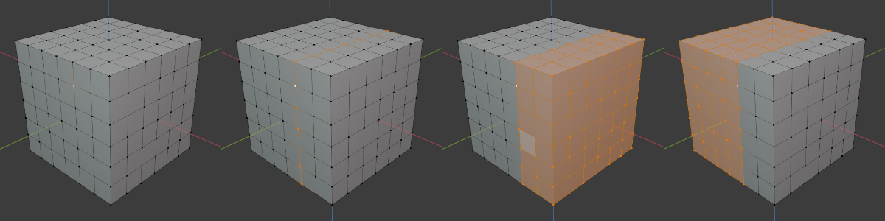

活动项的同侧¶
参考
- 模式
编辑模式
- 菜单
在一个活动的顶点上，这个工具将选择指定方向的所有顶点。它与*Loop Inner-Region*工具类似，它将填充选择其周界内的面，然而，它是由方向决定的，而不是由闭环决定。
- 轴向模式
决定了选择的行为。更多的信息可以在 转变的方向 中找到。
- 轴向记号
- 正向/负向
根据选择的*轴，选择将包括从活动顶点开始向外的正轴或负轴。
- 对齐轴
在 正轴和负轴 选择给定方向的所有顶点时， 对齐轴 将只选择与活动顶点一致的顶点。

在沿X轴追踪时：（从左到右）活动顶点、对齐、正向、负向。¶
- 轴向
方向
- 阈值
选区在原始周长之外的影响程度。阈值*越高，被选中的顶点就越多。